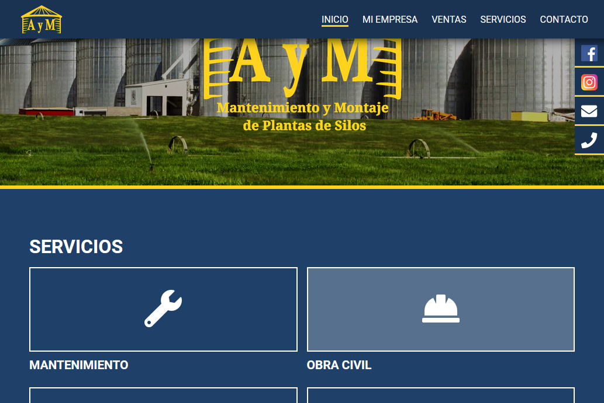
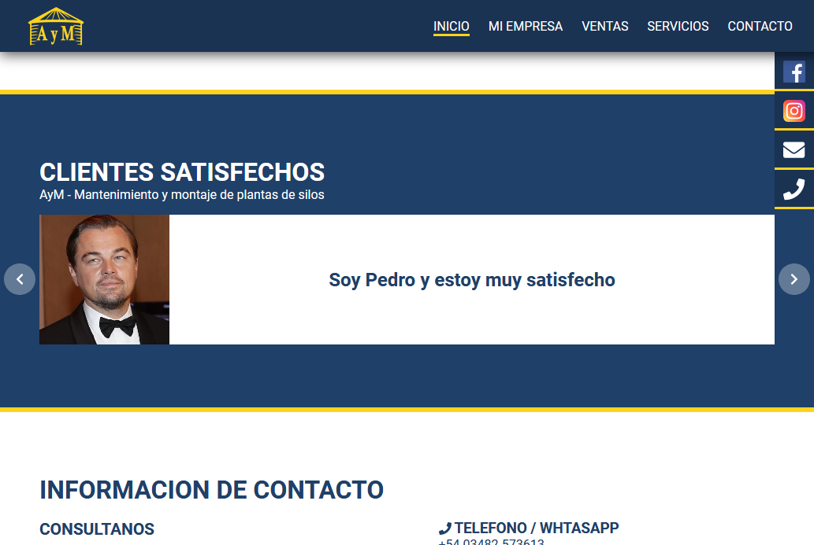
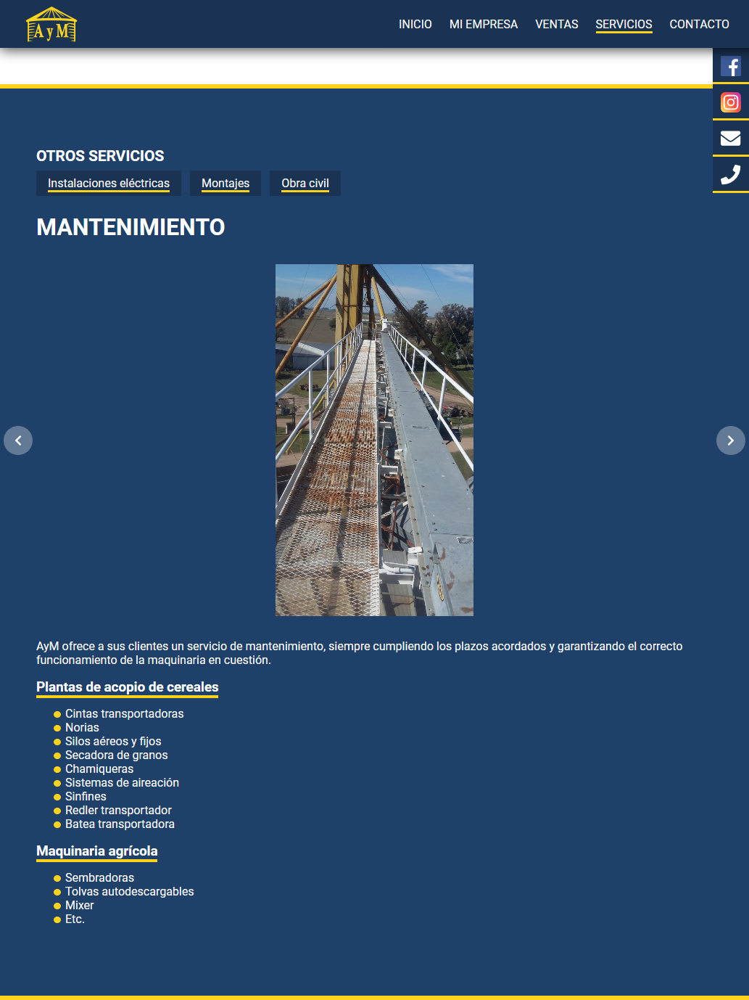
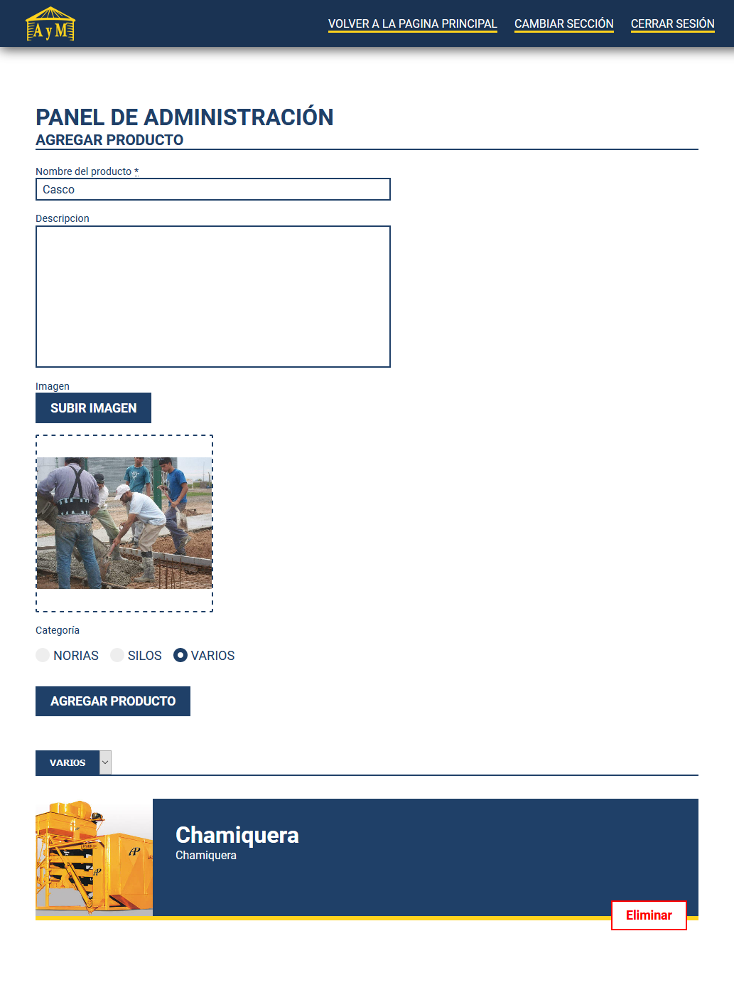
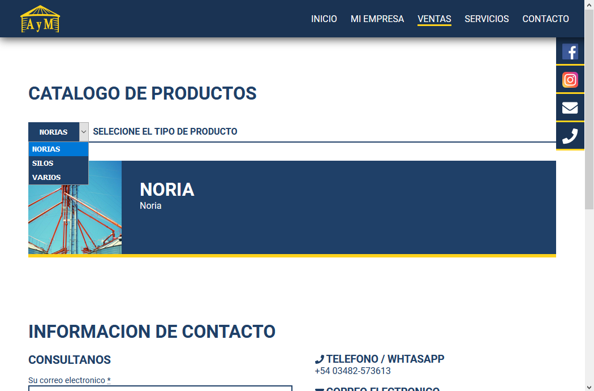

Web AyM





Acerca del proyecto
En equipo
Es una pagina web para la empresa AyM, en ella se describe la empresa, los servicios que brinda y se muestran historias de clientes satisfechos. También se presenta un catálogo de productos en venta.
La misma permite la alta y baja de nuevos productos e historias de clientes satisfechos a través de un panel de administración.
Lenguajes:
Tecnologías:
Mustache